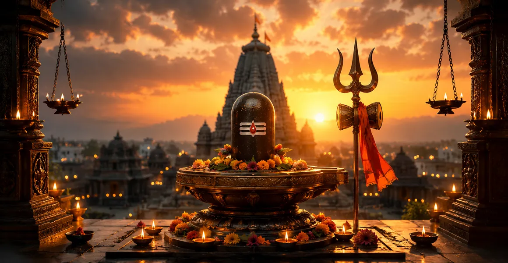

The Greatness of Mahakaleshvara Part - 2
The eleventh chapter of the Kotirudra Samhita continues the profound narrative of Mahakaleshvara, detailing the specific boons, spiritual rewards, and eternal blessings bestowed upon His devotees.
It expands upon the divine gifts granted to King Chandrasena and elaborates on how sincere worship of Mahakal purifies karma and secures liberation.
This chapter serves as a comprehensive guide to the transformative grace experienced by those who take refuge in the Lord of Time.
Chapter 11 Highlights
Extended Blessings
Lord Shiva elaborates on the manifold boons granted to worshippers of Mahakal.
Chandrasena's Reward
King Chandrasena receives supreme protection and everlasting spiritual status.
Karma Cleansing
Darshan of Mahakaleshvara burns away accumulated sins like fire consumes fuel.
Mukti Kshetra
Ujjain is reaffirmed as an ultimate land of liberation from rebirth.
Conquest of Fear
Devotees are permanently liberated from the terror of time and mortality.
Divine Grace
Unfailing compassion flows to all who chant the sacred names of Mahakal.
Core Topics in This Chapter
The Bestowal of Supreme Boons
Chapter 11 opens with Lord Shiva elaborating on the extensive spiritual boons granted to anyone who worships the Mahakaleshvara Jyotirlinga with faith.
The Lord declares that no devotee of Mahakal shall ever experience untimely death, poverty, or distress of the material world.
Blessings Bestowed upon King Chandrasena
Addressing King Chandrasena, Lord Shiva praised his exemplary devotion and granted him sovereignty that would remain unbroken across generations.
Furthermore, the king was promised eternal union in the divine realm of Shiva after fulfilling his earthly duties with righteousness.
Spiritual Purification and Karma Destruction
The narrative explains how the mere sight (darshan) of Mahakaleshvara acts as an infallible fire that consumes all accumulated negative karma.
Even those burdened by severe sins attain immediate purification upon stepping into the sacred precincts of the temple.
The Unrivaled Glory of Ujjain Kshetra
Lord Shiva extols the city of Ujjain as a premier sacred ground where spiritual seekers effortlessly transcend worldly illusions.
It is ordained that every grain of sand in Ujjain possesses sacred potency, transforming the city into a living liberation zone.
Conquest over Death and Ultimate Liberation
Because Mahakal governs time itself, His devotees find themselves completely insulated from the paralyzing fear of mortality.
At the end of earthly existence, they merge directly into the supreme radiance of Lord Shiva, attaining eternal peace.
Sacred Instructions for Worshipping Mahakal
The chapter provides specific guidance on observing fasts on Pradosha days and Mondays, chanting the Mahamrityunjaya mantra, and offering bilva leaves.
These disciplined practices ensure rapid spiritual advancement and the unfailing grace of the presiding deity.
Transition to Chapter 12
Having fully revealed the magnificent boons and glory of Mahakaleshvara in Part 2, the narrative transitions gracefully to Chapter 12.
Readers are thus led onward to discover the sacred legend and divine origin of Omkareshvara Jyotirlinga.
Key Teachings of Chapter 11
Immunity from Fear
True devotion to Mahakal eliminates all anxiety regarding death and fate.
Righteous Prosperity
Spiritual alignment brings both material stability and divine protection.
Instant Absolution
Stepping into Ujjain with faith instantly nullifies past karmic debts.
Power of Mantra
Chanting sacred mantras aligns the soul with cosmic eternity.
Unfailing Grace
The Lord responds to every sincere prayer with boundless benevolence.
Eternal Abode
Devotees ultimately attain permanent residence in Kailasa.
Spiritual Reflection
Part 2 of the greatness of Mahakaleshvara deepens our understanding of how divine grace operates in human life. It assures us that no matter how heavy our karmic burdens may be, sincere refuge in the Lord of Time can dissolve them completely. Ujjain stands as a living testament that surrender to Shiva transforms mortal existence into an immortal journey of peace and liberation.
Living the Message of Chapter 11
Release existential fears by anchoring your mind in spiritual practices and trust in the protective shelter of Mahakal.
Maintain regularity in observing sacred fasts and chanting holy mantras to purify your inner consciousness.
Approach life's transitions with equanimity, knowing that time is governed by the supreme compassionate Lord.
Key Spiritual Concepts
The liberator from the terrifying bonds of time and mortality.
A sacred zone conferring automatic liberation upon its residents.
Sacred twilight fasting dedicated to propitiating Lord Shiva.
The great victory-over-death mantra chanted for longevity and peace.
The complete wiping away of past sins through divine grace.
Ultimate union with the divine consciousness of Lord Shiva.
Chapter Summary
Kotirudra Samhita Chapter 11 expands extensively upon the boons, glory, and spiritual rewards of worshipping Mahakaleshvara. By detailing King Chandrasena's eternal blessings, the total destruction of karmic sins, and Ujjain's status as a supreme liberation zone, the chapter reinforces the absolute protection offered by Mahakal. This paves the way for exploring the sacred Omkareshvara Jyotirlinga in Chapter 12.
Frequently Asked Questions
1. What is the main subject of Kotirudra Samhita Chapter 11?
Chapter 11 elaborates on the extended glory, specific boons, and spiritual rewards granted by Lord Mahakaleshvara to His worshippers.
2. What boons did Lord Shiva grant to King Chandrasena?
Lord Shiva blessed King Chandrasena with unmatched prosperity, unbroken protection, and ultimate spiritual liberation.
3. How does worshipping Mahakaleshvara affect past karma?
Sincere worship of Mahakaleshvara burns away accumulated sins and purifies the devotee's karma completely.
4. What is the significance of Ujjain as a spiritual centre in this chapter?
Ujjain is glorified as a supreme mukti kshetra where death loses its terror and devotees attain union with Shiva.
5. How does Chapter 11 connect to the surrounding chapters?
Chapter 11 directly continues from Chapter 10 (The Greatness of Mahakaleshvara) and precedes Chapter 12, which explores the sacred Omkareshvara Jyotirlinga.
6. What is the core spiritual takeaway of this chapter?
Devotion to Mahakal provides absolute sanctuary from existential suffering and grants eternal peace.
“Through the grace of Mahakaleshvara, all karmic bonds are dissolved, and devotees attain supreme immortality.”
Continue Through Kotirudra Samhita
Chapter 11 explores the extended greatness of Mahakaleshvara. Continue to Chapter 12, The Sacred Omkareshvara.